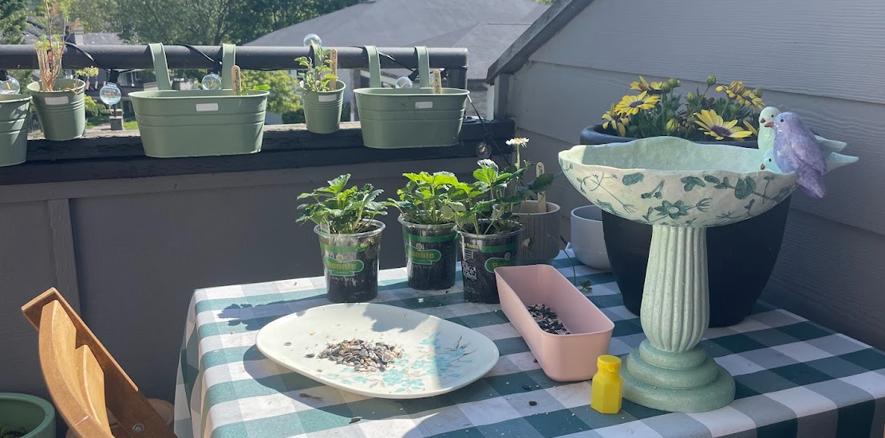

Step One - Acquire Materials
To start your own small scale garden, you'll need to acquire a few things first. You'll need:
Step Two - Gather Materials
Gather all of your items in a space you're comfortable with getting a bit dirty, like a counter top, balcony, etc. If you're inside, it may be a good idea to set a tarp or large towel down under your working area to make any mess or spills easier to clean.
Step Three - Potting
Go ahead and open your bag of potting mix. Fill your pots most of the way with potting mix, leaving rougly two inches of room from the top of the pot. DO NOT pack the soil into the pot, this will make it harder for your future plant to spread its roots.
Step Four - Planting
With seeds:
Your seed packet should have instructions on how exactly to plant your type of chosen seeds. Generally, you'll make a shallow hole (or multiple depending on the size of plant and pot), put the seed in the hole, then loosely cover it with dirt. Follow the directions on your packet of seeds for best results.
With starter plants:
If dirt comes compacted around your starter plant, try your best to gently separate the plant from the excess dirt. Make a hole in your potted soil for your starter plant, roughly the size of the container it came in. Place your plant in the hole and make sure all roots are covered by the soil.
Step Five - Watering
One of the biggest points of contention for many when it comes to gardening is how to water their plants. The trick is that it isn't about the amount of water, its knowing when to water. Water your plants after you first plant them, then after when the first inch of soil in your pot is completely dry. When watering, be generous. Make sure the soil is thoroughly soaked so water can reach the deepest roots of the plant.
If keeping your plants outside, the time of day you water matters as well. It is generally best to water them either in the morning or at night, and to avoid mid-day watering. Watering your plants during the day means warmer temperatures, and your water will evaporate faster.
Step Six - Wait
Set your plant in the area with the amount of reccomended shade/light and wait a few weeks to months. Soon you'll have a starter garden like seen below!
